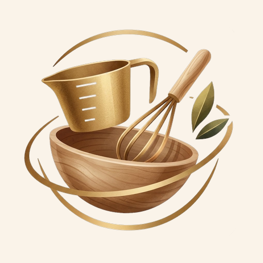

Cake pan conversion chart: scale a recipe to a different pan
Recipe calls for an 8-inch pan but yours is 9 inches? A 9-inch round pan has 27% more area than an 8-inch one. Multiply every ingredient by the factor in the chart and the batter will bake at the same depth.
How to use it: find the recipe's pan in the left column and your pan along the top. The number is what you multiply each ingredient by. Example: 8-inch to 9-inch → ×1.27; 2 cups of flour become about 2½ cups.
Round cake pans (diameter)
| Recipe ↓ · Yours → | 6″ | 7″ | 8″ | 9″ | 10″ | 11″ | 12″ |
|---|---|---|---|---|---|---|---|
| 6″ | ×1.00 | ×1.36 | ×1.78 | ×2.25 | ×2.78 | ×3.36 | ×4.00 |
| 7″ | ×0.73 | ×1.00 | ×1.31 | ×1.65 | ×2.04 | ×2.47 | ×2.94 |
| 8″ | ×0.56 | ×0.77 | ×1.00 | ×1.27 | ×1.56 | ×1.89 | ×2.25 |
| 9″ | ×0.44 | ×0.60 | ×0.79 | ×1.00 | ×1.23 | ×1.49 | ×1.78 |
| 10″ | ×0.36 | ×0.49 | ×0.64 | ×0.81 | ×1.00 | ×1.21 | ×1.44 |
| 11″ | ×0.30 | ×0.40 | ×0.53 | ×0.67 | ×0.83 | ×1.00 | ×1.19 |
| 12″ | ×0.25 | ×0.34 | ×0.44 | ×0.56 | ×0.69 | ×0.84 | ×1.00 |
Square and rectangular pans
To go from a round pan to a square or rectangular one (or back), compare areas. This chart shows the round pan each one matches:
| Pan | Area | Same as a round pan of |
|---|---|---|
| 8 × 8 in square | 64 in² | 9.0 in |
| 9 × 9 in square | 81 in² | 10.2 in |
| 11 × 7 in baking dish | 77 in² | 9.9 in |
| 9 × 13 in baking pan | 117 in² | 12.2 in |
| 10 × 15 in jelly roll pan | 150 in² | 13.8 in |
| 12 × 17 in half sheet | 204 in² | 16.1 in |
Example: a recipe for a 9-inch round pan (64 in²) baked in a 9 × 13 pan (117 in²): 117 ÷ 64 = ×1.84.
Tips when changing pans
- Eggs: round to the nearest whole egg; if you get 2.5, use 3 small or 2 large.
- Baking time: depends on batter depth, not quantity. At the same depth the time is similar; check 5–10 minutes early in shallower pans.
- Baking powder and salt: scale them like everything else.
Recipe in grams? See the cups to grams chart.

Rather skip the math? With Recipe Tailor you paste or snap a recipe and it scales itself to your servings or your pan.
Get it free on Google Play